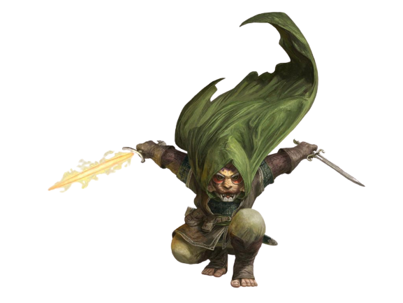

Trecho
MAGRELO E DE CABELOS LISOS, SUA PELE TEM UM TOM marron-noz e seus olhos são de um cor turquesa surpreendente, Burgell parece ter metade da floura de Aeron e precisa subir em um caixote para ver através do olho mágico. Como a maioria das residências em Oeble, aquela casa em particular foi construída por humanos e os residentes pequenos lidam com isso sem se constranger da melhor forma que podem.
Mas, pelo menos a grandeza relativa do apartamento permitiu que Burgell tivesse espaço para todas as suas bugigangas de tamanho gnomo. A sala principal era sua oficina e ela continha uma variedade inimaginável de ferramentas: martelos, cinzeis, serras, fechaduras, lentes coloridas, lupas de joalheiro, jarros de pólvora e ingredientes picados para conjurar magias. Um gato cinza e gordo, o familiar do arcano, permanece deitado sobre um grimório. Ele abriu seus olhos, deu uma olhada de soslaio desdenhosa para Aeron e depois, aparentemente, voltou a dormir. –Richard Lee Byers, O Buquê Negro
Um zumbido constante de atividades permeia a vizinhança onde os gnomos formam suas comunidades privadas. Barulhos estrondosos pontuam o zumbido: um tilintar de engrenagens moendo aqui, uma pequena explosão ali, um grito de surpresa ou comemoração e, principalmente, muitas gargalhadas. Gnomos regozijam a vida, apreciando cada momento de invento, exploração, investigação, criação e brincadeira.
Expressões Vibrantes
A energia e entusiasmo dos gnomos pela vida brilha em cada pedacinho do seu pequeno corpo. Um gnomo padrão tem aproximadamente 90 centímetros de floura e pesa entre 20 e 23 kg. Seus rostos morenos ou bronzeados são geralmente adornados com largos sorrisos (apesar dos seus prodigiosos narizes) e seus olhos brilhantes vibram de emoção. Seus cabelos claros tendem a ser espichados, como se expressassem o insaciável interesse dos gnomos em tudo a sua volta.
A personalidade de um gnomo é muito maior que sua aparência. A barba de um gnomo macho, em contraste com seu cabelo bagunçado, mantem se perfeitamente aparada, mas as vezes, tem um bigode estiloso e pontas curiosas. Apesar da roupa de um gnomo geralmente possuir tons modestos de terra, ele ostenta bordados, estampas ou joias reluzentes.
Dedicação Incrível
Até onde os gnomos tem conhecimento, estar vivo é uma coisa maravilhosa e eles espremem cada gota dos seus três a cinco séculos de vida aproveitando ao máximo. Humanos devem se perguntar como deve ser entediante o curso de uma vida tão longa, e elfos levam muito tempo para saborear as belezas do mundo em seus longos anos, mas gnomos parecem estar preocupados que, mesmo com tanto tempo, não seja suficiente para fazer ou ver tudo que eles querem.
Gnomos falam mais rápido que o pensamento em suas cabeças consegue se formar. Mesmo enquanto eles oferecem uma vasta gama de ideias ou opções, eles ainda tendem a ouvir atentamente os outros, adicionando apropriadamente exclamações e surpresa e apreciação ao longo da conversa.
Apesar dos gnomos adorarem piadas de todos os tipos, principalmente trocadilhos e travessuras, eles são igualmente dedicados a tarefas sérias que eles desempenhem. Muitos gnomos são engenheiros, alquimistas, engenhoqueiros e inventores habilidosos. Eles não se importam em cometer erros e riem de si mesmos no processo de aperfeiçoamento do que fazem, sem medo de se arriscar (as vezes imprudentemente) e sonhando floo.
Tocas Brilhantes
Os gnomos fazem suas casas em terras montanhosas de floresta. Eles vivem no subterrâneo, mas saem mais ao ar livre que os anões, aproveitando a natureza viva do mundo na superfície sempre que podem. Suas casas são bem escondidas tanto por construções inteligentes quanto por pequenas ilusões. Visitantes desejados são rapidamente levados para as tocas quentes e iluminadas. Os que não são bem-vindos dificilmente encontrarão a toca à primeira vista.
Os gnomos que se estabelecem em terras humanas normalmente são lapidários, engenheiros, sábios ou engenhoqueiros. Algumas famílias humanas possuem um tutor gnomo, garantindo que seus pupilos apreciem uma mistura de aprendizado sério e divertimento encantador. Um gnomo irá ensinar a várias gerações de uma única família humana ao curso de sua longa vida.
Vendo o Mundo
Curiosos e impulsivos, gnomos tendem a se aventurar como um meio de ver o mundo ou pela paixão por explorar. Como amantes de gemas e outros itens finos, alguns gnomos vão se aventurar como um meio rápido, apesar de perigoso, de adquirir riqueza. Independente do motivo que os levou a se aventurar, gnomos que escolhem esse estilo de vida adquirem muito mais satisfação do que se eles estivessem realizando qualquer outra atividade que eles teriam, as vezes para um enorme aborrecimento para os seus companheiros de aventura.
Traços Raciais dos Gnomos
Seu personagem gnomo possui certas características em comum com todos os outros gnomos.
Aumento no Valor de Habilidade.
Seu valor de Inteligência aumenta em 2.
Idade.
Gnomos amadurecem a mesma proporção que os humanos e, a maioria, atinge a idade adulta por volta dos 40 anos. Eles podem viver entre 350 e 500 anos.
Tendência.
Os gnomos geralmente são bons. Os que tendem para a ordem são sábios, engenheiros, pesquisadores, escolásticos, investigadores ou inventores. Os que tendem ao caos são menestréis, engenhoqueiros, andarilhos ou joalheiros caprichosos. Gnomos são bons de coração e, até mesmo os trapaceiros entre eles tendem a ser mais brincalhões que perversos.
Tamanho.
Os gnomos tem entre 0,90 e 1,20 metro e seu peso médio é de 20 kg. Seu tamanho é Pequeno.
Deslocamento.
Seu deslocamento base de caminhada é 7,5 metros.
Visão no Escuro.
Acostumado à vida subterrânea, você tem uma visão superior no escuro e na penumbra. Você enxerga na penumbra a até 18 metros como se fosse luz plena, e no escuro como se fosse na penumbra. Você não pode discernir cores no escuro, apenas tons de cinza.
Esperteza Gnômica.
Você possui vantagem em todos os testes de resistência de Inteligência, Sabedoria e Carisma contra magia.
Idiomas.
Você sabe falar, ler e escrever Comum e Gnômico. A linguagem Gnômica, que usa o alfabeto Anão, é conhecida por suas técnicas de dissertação e por seus catálogos de conhecimento sobre o mundo natural.
Sub-raça.
Duas sub-raças de gnomos são encontradas ao redor dos mundos de D&D: os gnomos da floresta e os gnomos das rochas. Escolha uma dessas subraças.
Atributos naturais
Gnomo da floresta
Como um gnomo da floresta, você possui um traquejo natural com ilusões e velocidade e furtividade naturais. Nos mundos de D&D, gnomos da floresta são raros e reservados. Eles vivem em comunidades escondidas em florestas silvestres, usando suas ilusões e truques para se esconderem das ameaças ou para mascarar sua fuga antes de serem detectados. Gnomos da floresta tendem a ser amigáveis com outros povos da floresta espirituosos e eles tem nos elfos e fadas bondosas como seus mais importantes aliados. Eles gnomos também fazem amizade com pequenos animais silvestres e contam com eles para obter informações sobre ameaças que estejam perambulando por suas terras.
Aumento no Valor de Habilidade.
Seu valor de Destreza aumenta em 1.
Ilusionista Nato.
Você conhece o truque ilusão menor. Inteligência é a sua habilidade usada para conjurá-la.
Falar com Bestas Pequenas.
Através de sons e gestos, você pode comunicar ideias simples para Bestas pequenas ou menores. Gnomos da floresta amam os animais e normalmente possuem esquilos, doninhas, coelhos, toupeiras, pica-paus e outras criaturas como amados animais de estimação.
Atributos naturais
Gnomo das Rochas
Como um gnomo das rochas, você possui uma inventividade e resistência naturais acima dos outros gnomos. A maioria dos gnomos nos mundos de D&D são gnomos das rochas, incluindo os gnomos engenhoqueiros do cenário de Dragonlance.
Aumento no Valor de Habilidade.
Seu valor de Constituição aumenta em 1.
Conhecimento de Artífice.
Toda vez que você fizer um teste de Inteligência (História) relacionado a itens mágicos, objetos alquímicos ou mecanismos tecnológicos, você pode adicionar o dobro do seu bônus de proficiência, ao invés de qualquer bônus de proficiência que você normalmente use.
Engenhoqueiro:
Você possui proficiência com ferramentas de artesão (ferramentas de engenhoqueiro). Usando essas ferramentas, você pode gastar 1 hora e 10 po em materiais para construir um mecanismo Miúdo (CA 5, 1 pv). O mecanismo para de funcionar após 24 horas (a não ser que você gaste 1 hora reparando-o para manter o mecanismo funcionando), ou quando você usa sua ação para desmantelá-lo; nesse momento, você pode recuperar o material usado para criá-lo. Você pode ter até três desses mecanismos ativos ao mesmo tempo.
Quando você criar um mecanismo, escolha uma das seguintes opções:
Brinquedo Mecânico.
Esse brinquedo é um animal, monstro ou pessoa mecânica, como um sapo, rato, pássaro, dragão ou soldado. Quando colocado no chão, o brinquedo se move 1,5 metro pelo chão em cada um dos seus turnos em uma direção aleatória. Ele faz barulhos apropriados a criatura que ele representa.
Isqueiro Mecânico.
O mecanismo produz uma miniatura de chama, que você pode usar para acender uma vela, tocha ou fogueira. Usar o mecanismo requer sua ação.
Caixa de Música.
Quando aberta, essa caixa de música toca uma canção a um volume moderado. A caixa para de tocar quando alcança o fim da música ou quando é fechada.